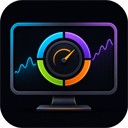

通过 AIDA64 RemoteSensor 显示 CPU、GPU、内存、温度、频率与风扇状态。Shows CPU, GPU, memory, temperatures, clocks and fans through AIDA64 RemoteSensor.

HoloCubic · PC Dashboard
Holo PC Monitor
把电脑的实时状态，浓缩进一块精致的 320×240 仪表盘。Your live PC status, distilled into a polished 320×240 dashboard.
功能亮点Highlights
经典视图与 320×240 图形仪表盘随时切换，兼顾信息密度与观感。Switch between the classic view and a visual 320×240 dashboard.
顶部集中显示本地天气、时间和日期，曲线持续呈现关键指标走势。Local weather, time and date sit above live history charts for key metrics.
从浏览器配置数据地址、切换布局，无需修改设备端代码。Configure the data source and switch layouts from your browser.